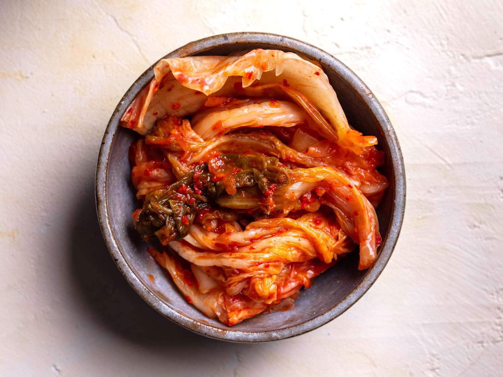

Kimchi

Description
Kimchi is a korean dish composed of fermented napa cabage and spices for the ultimate umami flavor.
Ingredients:
- kosher salt
- 1 napa cabbage
- 2 carrots
- 1 daikon radish
- 1 bunch of green onions
Paste ingredients:
- 1 asian pear
- 6 cloves of garlic
- 2 inch piece of ginger
- 1/4 cup of fish sauce
- 1/3 cup of korean red pepper flakes
Steps:
- Wash cabage and dry off.
- Chop cabage and green onion.
- Juliene raddish and carrots.
- Heavly salt cabage and let sit for 2 hours.
- while we wait for cabage put all paste ingredients into blender and blend.
- After 2 hours wash all salt of cabage.
- Mix paste,cabage,carrots, and radish together.
- Store in container or glass jar and wait for 4-6 days for cabage to ferment at room temperature.
- After 4-6 days Enjoy!!